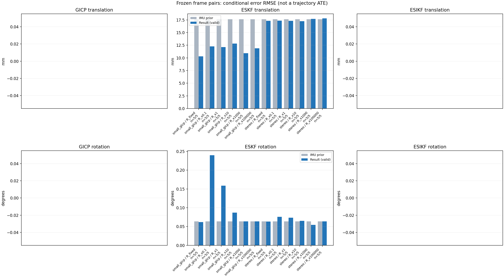

20261015_112845_yaw_left · depth=disparity_cache · cache=90f4812991bfdfd4352d
模型视差：/home/ubuntu22/slam/SIO_SLAM/models/tensorrt/disp_896x448_fp16.plan；engine SHA256=604cf6ac1f705c877260711730dd5d2d58c2a21f3020c03c668401ef7fb1e768。输入为生产裁剪与光照处理后的 RGB 0..255；此实验使用原始浮点像素视差，不应用完整前端的邻域视差后处理。
原始 ONNX SHA256：e9f49736a65d68d06681add463866b6defdf78fdd7f4f50f6cc941b682fdc0bc。
代价体图改写验证：ONNX Runtime 固定随机特征输入，最大绝对误差 0；该项检查图改写，完整模型精度仍需由录制数据评估。
配准代码版本：744ac2d993ae629b0cc44a3b1d995e04ab4fad48；观测生成版本：744ac2d993ae629b0cc44a3b1d995e04ab4fad48。
固定图像对与纯 IMU 先验；ESKF 回放固定 GICP 观测，ESIKF 直接读取点云。真值只用于此报告。
同时查看 converged 与 solver_status：上游默认 Stereo 在 max_iter / stopped_at_minimum 时也可能置 converged=true。valid 表示输入检查通过，不表示精度提升。欧氏 GICP 未提供独立的点距 RMSE，该列显示 NaN。
误差按每对图像的锚点计算，单位 m / degrees。此处 RMSE 不是全序列 ATE；末帧受同一锚点条件约束。NIS 与条件马氏距离是诊断量，少量相关图像对不能用于宣称协方差已校准。
全部指标 CSV · R / P / K 矩阵 CSV · Stereo 求解逐轮 CSV · ESIKF 逐轮 CSV · 配置快照 · 矢量图
| stage | method | variant | valid | total | translation RMSE (m) | rotation RMSE (deg) |
|---|---|---|---|---|---|---|
| eskf | small_gicp | R_fixed | 5 | 5 | 0.010314 | 0.061766 |
| eskf | small_gicp | R_x0.1 | 5 | 5 | 0.012268 | 0.23987 |
| eskf | small_gicp | R_x1 | 5 | 5 | 0.012136 | 0.15872 |
| eskf | small_gicp | R_x10 | 5 | 5 | 0.012837 | 0.086765 |
| eskf | small_gicp | R_x1000 | 5 | 5 | 0.010934 | 0.063429 |
| eskf | small_gicp | R_x100000 | 5 | 5 | 0.01188 | 0.063719 |
| eskf | stereo | R_fixed | 5 | 5 | 0.017317 | 0.063112 |
| eskf | stereo | R_x0.1 | 5 | 5 | 0.017358 | 0.075972 |
| eskf | stereo | R_x1 | 5 | 5 | 0.017321 | 0.073399 |
| eskf | stereo | R_x10 | 5 | 5 | 0.017236 | 0.065005 |
| eskf | stereo | R_x1000 | 5 | 5 | 0.017684 | 0.054433 |
| eskf | stereo | R_x100000 | 5 | 5 | 0.017799 | 0.063489 |

| stage | case | method | variant | status | solver_status | inliers | converged | covariance_convention | covariance_from_hessian | fitness | registration_rmse_m | prior_trans_error_m | result_trans_error_m | prior_rot_error_deg | result_rot_error_deg | R_rot_trace_rad2 | R_pos_trace_m2 | nis_regularized |
|---|---|---|---|---|---|---|---|---|---|---|---|---|---|---|---|---|---|---|
| eskf | static_start | small_gicp | R_x0.1 | updated | 23497 | 1 | right_source_body | 1 | 0.91749 | nan | 7.8303e-05 | 0.0060829 | 0.0034263 | 0.22205 | 4.0996e-08 | 1.1896e-06 | 101.58 | |
| eskf | static_start | small_gicp | R_x1 | updated | 23497 | 1 | right_source_body | 1 | 0.91749 | nan | 7.8303e-05 | 0.0024973 | 0.0034263 | 0.17863 | 4.0996e-07 | 1.1896e-05 | 32.478 | |
| eskf | static_start | small_gicp | R_x10 | updated | 23497 | 1 | right_source_body | 1 | 0.91749 | nan | 7.8303e-05 | 0.0024025 | 0.0034263 | 0.13125 | 4.0996e-06 | 0.00011896 | 9.4743 | |
| eskf | static_start | small_gicp | R_x1000 | updated | 23497 | 1 | right_source_body | 1 | 0.91749 | nan | 7.8303e-05 | 0.00021932 | 0.0034263 | 0.0088979 | 0.00040996 | 0.011896 | 0.31615 | |
| eskf | static_start | small_gicp | R_x100000 | updated | 23497 | 1 | right_source_body | 1 | 0.91749 | nan | 7.8303e-05 | 7.968e-05 | 0.0034263 | 0.0034776 | 0.040996 | 1.1896 | 0.0032704 | |
| eskf | static_start | small_gicp | R_fixed | updated | 23497 | 1 | right_source_body | 1 | 0.91749 | nan | 7.8303e-05 | 9.0629e-05 | 0.0034263 | 0.006964 | 0.00022846 | 0.0012 | 0.47548 | |
| eskf | static_start | stereo | R_x0.1 | updated | max_iter | 23319 | 1 | left_target_body | 1 | 0.91104 | 0.16629 | 7.8303e-05 | 0.0015818 | 0.0034263 | 0.007958 | 2.9674e-10 | 5.8369e-09 | 1.7747 |
| eskf | static_start | stereo | R_x1 | updated | max_iter | 23319 | 1 | left_target_body | 1 | 0.91104 | 0.16629 | 7.8303e-05 | 0.001561 | 0.0034263 | 0.0078266 | 2.9674e-09 | 5.8369e-08 | 1.7474 |
| eskf | static_start | stereo | R_x10 | updated | max_iter | 23319 | 1 | left_target_body | 1 | 0.91104 | 0.16629 | 7.8303e-05 | 0.0013859 | 0.0034263 | 0.0067664 | 2.9674e-08 | 5.8369e-07 | 1.5202 |
| eskf | static_start | stereo | R_x1000 | updated | max_iter | 23319 | 1 | left_target_body | 1 | 0.91104 | 0.16629 | 7.8303e-05 | 0.00021309 | 0.0034263 | 0.0025684 | 2.9674e-06 | 5.8369e-05 | 0.1147 |
| eskf | static_start | stereo | R_x100000 | updated | max_iter | 23319 | 1 | left_target_body | 1 | 0.91104 | 0.16629 | 7.8303e-05 | 7.9196e-05 | 0.0034263 | 0.0033772 | 0.00029674 | 0.0058369 | 0.0013065 |
| eskf | static_start | stereo | R_fixed | updated | max_iter | 23319 | 1 | left_target_body | 1 | 0.91104 | 0.16629 | 7.8303e-05 | 8.5867e-05 | 0.0034263 | 0.0030369 | 0.00022846 | 0.0012 | 0.0065288 |
| eskf | sync_motion | small_gicp | R_x0.1 | updated | 23054 | 1 | right_source_body | 1 | 0.89343 | nan | 0.00039414 | 0.021359 | 0.010052 | 0.22981 | 4.9117e-08 | 1.6273e-06 | 951.96 | |
| eskf | sync_motion | small_gicp | R_x1 | updated | 23054 | 1 | right_source_body | 1 | 0.89343 | nan | 0.00039414 | 0.022549 | 0.010052 | 0.19323 | 4.9117e-07 | 1.6273e-05 | 152.31 | |
| eskf | sync_motion | small_gicp | R_x10 | updated | 23054 | 1 | right_source_body | 1 | 0.89343 | nan | 0.00039414 | 0.019367 | 0.010052 | 0.08515 | 4.9117e-06 | 0.00016273 | 22.723 | |
| eskf | sync_motion | small_gicp | R_x1000 | updated | 23054 | 1 | right_source_body | 1 | 0.89343 | nan | 0.00039414 | 0.0077165 | 0.010052 | 0.0085696 | 0.00049117 | 0.016273 | 0.32063 | |
| eskf | sync_motion | small_gicp | R_x100000 | updated | 23054 | 1 | right_source_body | 1 | 0.89343 | nan | 0.00039414 | 0.00055012 | 0.010052 | 0.0099409 | 0.049117 | 1.6273 | 0.0036805 | |
| eskf | sync_motion | small_gicp | R_fixed | updated | 23054 | 1 | right_source_body | 1 | 0.89343 | nan | 0.00039414 | 0.01462 | 0.010052 | 0.018847 | 0.00022846 | 0.0012 | 0.7386 | |
| eskf | sync_motion | stereo | R_x0.1 | updated | max_iter | 22195 | 1 | left_target_body | 1 | 0.86151 | 0.14365 | 0.00039414 | 0.0013335 | 0.010052 | 0.025561 | 3.2106e-10 | 6.1788e-09 | 26.042 |
| eskf | sync_motion | stereo | R_x1 | updated | max_iter | 22195 | 1 | left_target_body | 1 | 0.86151 | 0.14365 | 0.00039414 | 0.0010748 | 0.010052 | 0.020694 | 3.2106e-09 | 6.1788e-08 | 19.088 |
| eskf | sync_motion | stereo | R_x10 | updated | max_iter | 22195 | 1 | left_target_body | 1 | 0.86151 | 0.14365 | 0.00039414 | 0.00057896 | 0.010052 | 0.011524 | 3.2106e-08 | 6.1788e-07 | 5.2886 |
| eskf | sync_motion | stereo | R_x1000 | updated | max_iter | 22195 | 1 | left_target_body | 1 | 0.86151 | 0.14365 | 0.00039414 | 0.00035038 | 0.010052 | 0.0087641 | 3.2106e-06 | 6.1788e-05 | 0.071083 |
| eskf | sync_motion | stereo | R_x100000 | updated | max_iter | 22195 | 1 | left_target_body | 1 | 0.86151 | 0.14365 | 0.00039414 | 0.00023804 | 0.010052 | 0.010149 | 0.00032106 | 0.0061788 | 0.00079025 |
| eskf | sync_motion | stereo | R_fixed | updated | max_iter | 22195 | 1 | left_target_body | 1 | 0.86151 | 0.14365 | 0.00039414 | 0.00049435 | 0.010052 | 0.010173 | 0.00022846 | 0.0012 | 0.0056533 |
| eskf | main_motion | small_gicp | R_x0.1 | updated | 18299 | 1 | right_source_body | 1 | 0.8353 | nan | 0.0033198 | 0.0068403 | 0.017216 | 0.10472 | 1.1747e-07 | 2.3592e-06 | 187.87 | |
| eskf | main_motion | small_gicp | R_x1 | updated | 18299 | 1 | right_source_body | 1 | 0.8353 | nan | 0.0033198 | 0.007498 | 0.017216 | 0.037144 | 1.1747e-06 | 2.3592e-05 | 39.735 | |
| eskf | main_motion | small_gicp | R_x10 | updated | 18299 | 1 | right_source_body | 1 | 0.8353 | nan | 0.0033198 | 0.008656 | 0.017216 | 0.0098675 | 1.1747e-05 | 0.00023592 | 6.248 | |
| eskf | main_motion | small_gicp | R_x1000 | updated | 18299 | 1 | right_source_body | 1 | 0.8353 | nan | 0.0033198 | 0.0094914 | 0.017216 | 0.017096 | 0.0011747 | 0.023592 | 0.080793 | |
| eskf | main_motion | small_gicp | R_x100000 | updated | 18299 | 1 | right_source_body | 1 | 0.8353 | nan | 0.0033198 | 0.0054535 | 0.017216 | 0.017192 | 0.11747 | 2.3592 | 0.0010181 | |
| eskf | main_motion | small_gicp | R_fixed | updated | 18299 | 1 | right_source_body | 1 | 0.8353 | nan | 0.0033198 | 0.0066524 | 0.017216 | 0.016537 | 0.00022846 | 0.0012 | 0.23062 | |
| eskf | main_motion | stereo | R_x0.1 | updated | max_iter | 16663 | 1 | left_target_body | 1 | 0.76601 | 0.10151 | 0.0033198 | 0.0041985 | 0.017216 | 0.013558 | 5.5108e-10 | 8.8021e-09 | 1.5221 |
| eskf | main_motion | stereo | R_x1 | updated | max_iter | 16663 | 1 | left_target_body | 1 | 0.76601 | 0.10151 | 0.0033198 | 0.0041838 | 0.017216 | 0.012575 | 5.5108e-09 | 8.8021e-08 | 1.382 |
| eskf | main_motion | stereo | R_x10 | updated | max_iter | 16663 | 1 | left_target_body | 1 | 0.76601 | 0.10151 | 0.0033198 | 0.0041208 | 0.017216 | 0.008537 | 5.5108e-08 | 8.8021e-07 | 0.75303 |
| eskf | main_motion | stereo | R_x1000 | updated | max_iter | 16663 | 1 | left_target_body | 1 | 0.76601 | 0.10151 | 0.0033198 | 0.00376 | 0.017216 | 0.0081237 | 5.5108e-06 | 8.8021e-05 | 0.066504 |
| eskf | main_motion | stereo | R_x100000 | updated | max_iter | 16663 | 1 | left_target_body | 1 | 0.76601 | 0.10151 | 0.0033198 | 0.0035513 | 0.017216 | 0.017 | 0.00055108 | 0.0088021 | 0.0012724 |
| eskf | main_motion | stereo | R_fixed | updated | max_iter | 16663 | 1 | left_target_body | 1 | 0.76601 | 0.10151 | 0.0033198 | 0.0041615 | 0.017216 | 0.016905 | 0.00022846 | 0.0012 | 0.0023957 |
| eskf | main_motion_long | small_gicp | R_x0.1 | updated | 13264 | 1 | right_source_body | 1 | 0.71439 | nan | 0.025379 | 0.011381 | 0.14096 | 0.19996 | 2.5121e-07 | 3.6621e-06 | 104.59 | |
| eskf | main_motion_long | small_gicp | R_x1 | updated | 13264 | 1 | right_source_body | 1 | 0.71439 | nan | 0.025379 | 0.011325 | 0.14096 | 0.072471 | 2.5121e-06 | 3.6621e-05 | 28.454 | |
| eskf | main_motion_long | small_gicp | R_x10 | updated | 13264 | 1 | right_source_body | 1 | 0.71439 | nan | 0.025379 | 0.01767 | 0.14096 | 0.10456 | 2.5121e-05 | 0.00036621 | 4.7746 | |
| eskf | main_motion_long | small_gicp | R_x1000 | updated | 13264 | 1 | right_source_body | 1 | 0.71439 | nan | 0.025379 | 0.019382 | 0.14096 | 0.14018 | 0.0025121 | 0.036621 | 0.056833 | |
| eskf | main_motion_long | small_gicp | R_x100000 | updated | 13264 | 1 | right_source_body | 1 | 0.71439 | nan | 0.025379 | 0.024579 | 0.14096 | 0.14097 | 0.25121 | 3.6621 | 0.0010381 | |
| eskf | main_motion_long | small_gicp | R_fixed | updated | 13264 | 1 | right_source_body | 1 | 0.71439 | nan | 0.025379 | 0.012806 | 0.14096 | 0.13549 | 0.00022846 | 0.0012 | 0.69341 | |
| eskf | main_motion_long | stereo | R_x0.1 | updated | max_iter | 12001 | 1 | left_target_body | 1 | 0.64895 | 0.11155 | 0.025379 | 0.026186 | 0.14096 | 0.091815 | 1.0281e-09 | 1.4617e-08 | 35.083 |
| eskf | main_motion_long | stereo | R_x1 | updated | max_iter | 12001 | 1 | left_target_body | 1 | 0.64895 | 0.11155 | 0.025379 | 0.02605 | 0.14096 | 0.085697 | 1.0281e-08 | 1.4617e-07 | 30.339 |
| eskf | main_motion_long | stereo | R_x10 | updated | max_iter | 12001 | 1 | left_target_body | 1 | 0.64895 | 0.11155 | 0.025379 | 0.02556 | 0.14096 | 0.071512 | 1.0281e-07 | 1.4617e-06 | 14.132 |
| eskf | main_motion_long | stereo | R_x1000 | updated | max_iter | 12001 | 1 | left_target_body | 1 | 0.64895 | 0.11155 | 0.025379 | 0.02357 | 0.14096 | 0.11619 | 1.0281e-05 | 0.00014617 | 0.85609 |
| eskf | main_motion_long | stereo | R_x100000 | updated | max_iter | 12001 | 1 | left_target_body | 1 | 0.64895 | 0.11155 | 0.025379 | 0.022937 | 0.14096 | 0.14044 | 0.0010281 | 0.014617 | 0.011727 |
| eskf | main_motion_long | stereo | R_fixed | updated | max_iter | 12001 | 1 | left_target_body | 1 | 0.64895 | 0.11155 | 0.025379 | 0.026148 | 0.14096 | 0.13956 | 0.00022846 | 0.0012 | 0.046643 |
| eskf | static_end | small_gicp | R_x0.1 | updated | 11656 | 1 | right_source_body | 1 | 0.84697 | nan | 0.03002 | 0.0091106 | 0.004953 | 0.3669 | 4.3497e-07 | 2.8325e-06 | 69.366 | |
| eskf | static_end | small_gicp | R_x1 | updated | 11656 | 1 | right_source_body | 1 | 0.84697 | nan | 0.03002 | 0.0061046 | 0.004953 | 0.22379 | 4.3497e-06 | 2.8325e-05 | 25.968 | |
| eskf | static_end | small_gicp | R_x10 | updated | 11656 | 1 | right_source_body | 1 | 0.84697 | nan | 0.03002 | 0.0074834 | 0.004953 | 0.046199 | 4.3497e-05 | 0.00028325 | 4.955 | |
| eskf | static_end | small_gicp | R_x1000 | updated | 11656 | 1 | right_source_body | 1 | 0.84697 | nan | 0.03002 | 0.0085095 | 0.004953 | 0.0045798 | 0.0043497 | 0.028325 | 0.060435 | |
| eskf | static_end | small_gicp | R_x100000 | updated | 11656 | 1 | right_source_body | 1 | 0.84697 | nan | 0.03002 | 0.0084562 | 0.004953 | 0.0047823 | 0.43497 | 2.8325 | 0.00090095 | |
| eskf | static_end | small_gicp | R_fixed | updated | 11656 | 1 | right_source_body | 1 | 0.84697 | nan | 0.03002 | 0.010481 | 0.004953 | 0.0063339 | 0.00022846 | 0.0012 | 0.84999 | |
| eskf | static_end | stereo | R_x0.1 | updated | max_iter | 6994 | 1 | left_target_body | 1 | 0.51073 | 0.17608 | 0.03002 | 0.028265 | 0.004953 | 0.13974 | 1.5802e-09 | 1.7155e-08 | 13.444 |
| eskf | static_end | stereo | R_x1 | updated | max_iter | 6994 | 1 | left_target_body | 1 | 0.51073 | 0.17608 | 0.03002 | 0.028292 | 0.004953 | 0.13764 | 1.5802e-08 | 1.7155e-07 | 12.862 |
| eskf | static_end | stereo | R_x10 | updated | max_iter | 6994 | 1 | left_target_body | 1 | 0.51073 | 0.17608 | 0.03002 | 0.02851 | 0.004953 | 0.12555 | 1.5802e-07 | 1.7155e-06 | 9.402 |
| eskf | static_end | stereo | R_x1000 | updated | max_iter | 6994 | 1 | left_target_body | 1 | 0.51073 | 0.17608 | 0.03002 | 0.031524 | 0.004953 | 0.034138 | 1.5802e-05 | 0.00017155 | 1.0468 |
| eskf | static_end | stereo | R_x100000 | updated | max_iter | 6994 | 1 | left_target_body | 1 | 0.51073 | 0.17608 | 0.03002 | 0.032331 | 0.004953 | 0.0053087 | 0.0015802 | 0.017155 | 0.015075 |
| eskf | static_end | stereo | R_fixed | updated | max_iter | 6994 | 1 | left_target_body | 1 | 0.51073 | 0.17608 | 0.03002 | 0.02825 | 0.004953 | 0.0063736 | 0.00022846 | 0.0012 | 0.076767 |